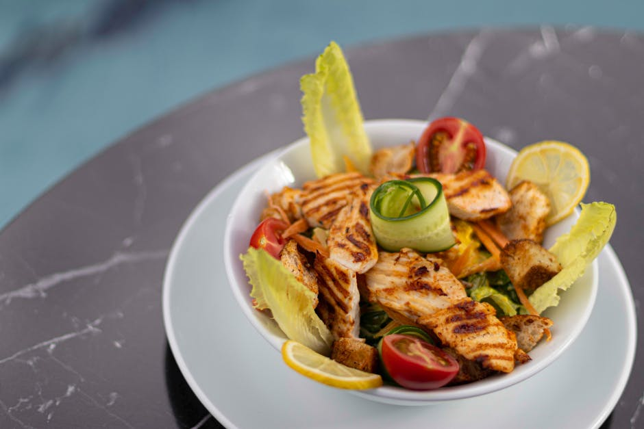

← Back to all nutrition guides | About Our Content
What To Eat After Work When Tired And Hungry
Reviewed by The Today's Food Coach Team
Our team of nutrition researchers and AI specialists ensures every guide is accurate and practical.
A realistic guide for busy professionals over 40.
After a long day at work, feeling tired and hungry is a common experience, especially for men aged 40 to 65 who are looking to lose weight and eat better. The choices made during these moments can have a significant impact on health and weight loss goals. Instead of reaching for quick and unhealthy snacks, it’s important to consider what nutritious options can help refuel your body without counting calories. Making smarter food choices after work can support weight management while also providing the energy needed to unwind and recharge. With the right strategies, meal prep, and simple recipes, you can satisfy your hunger in a way that aligns with your health objectives and sets you up for success the next day.
Want a personalized version of this strategy?
Try the AI Food Coach
Why What To Eat After Work When Tired And Hungry Matters
What you eat after work is crucial for several reasons, particularly for men in the 40 to 65 age group focusing on weight loss. After a demanding day, your body craves nourishment that can replenish energy levels and support recovery. However, choosing the wrong snacks or meals can lead to overeating, poor nutrition, and sluggishness. Instead of relying on convenient but unhealthy options like fast food or packaged snacks, prioritizing nutritious meals can make a significant difference. Beneficial foods rich in proteins, healthy fats, and complex carbohydrates not only satisfy hunger but also promote satiety and nutrient intake. A nutritious dinner or snack can stabilize blood sugar levels and prevent late-night cravings, allowing for better sleep and recovery. Furthermore, creating a habit of choosing healthy options after work can contribute to sustained weight loss and improved overall health. This is about making intentional choices that align with your weight loss journey without the burden of meticulous calorie counting.
Simple Strategy
- Choose whole foods like vegetables, lean proteins, and healthy fats to fill your plate.
- Prepare easy-to-make snacks such as yogurt with fruit or a handful of nuts to satisfy your hunger.
- Drink water before meals to help curb appetite and support digestion.
These strategies work best when personalized to your lifestyle and goals.
Build Your Personalized Nutrition Plan
Most people know what foods are healthy. The hard part is knowing what to eat today. Today's Food Coach creates a simple, personalized daily plan based on your goals and lifestyle.
Start Your PlanExample Day of Eating
Imagine coming home after work feeling exhausted. Instead of reaching for chips, you opt for a plate of grilled chicken with steamed broccoli and quinoa. For a quick snack, you might grab a small bowl of Greek yogurt topped with berries. Hydrating with water throughout makes all the difference, keeping you satisfied while also nourishing your body.
Common Mistakes
- Skipping meals and relying on unhealthy snacks later.
- Not planning meals ahead of time, leading to impulsive choices.
- Overloading on carb-heavy foods without balancing with protein and fats.
Practical Tips
- Keep healthy snacks accessible to avoid temptations.
- Make meal prep a weekend routine to simplify weeknight dinners.
- Focus on portion control by using smaller plates to manage serving sizes.
Frequently Asked Questions
What are healthy snacks I can eat after work?
Opt for options like carrot sticks with hummus, unsweetened yogurt with a sprinkle of nuts, or a piece of fruit with nut butter.
How can I avoid overeating at night?
Hydrate before meals, eat mindfully, and choose foods high in fiber and protein to increase satiety.
Is it better to cook or buy meals after work?
Cooking allows for better control over ingredients and portions, making it a healthier choice overall.
Related Nutrition Guides
- How To Control Portions Without Counting Calories
- How To Eat Healthy Without Dieting
- How To Stay Consistent With Diet
Try Today's Food Coach
Generate a personalized meal strategy based on your lifestyle and goals.
Try the AI Food Coach